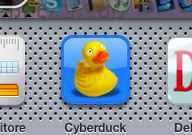
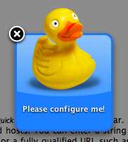
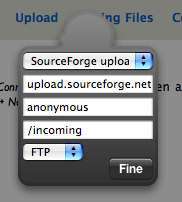
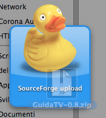

-
Open the Widget.
Click the Dashboard icon or press the or F12 key. Show the widget bar clicking the plus sign, click Cyberduck to open it.
 -
First configuration.
Once opened, the widget needs to be configured. It will show a Please configure me! message on the blue rounded square. Click on the message to reveal the back.
 -
Configure the connection.
Choose a bookmark from the dropdown menu; the bookmarks are shared with the Cyberduck application so you’ll already find your usual connections. Every change to parameters will only affect this instance of the widget.
 -
Upload.
Hide Dashboard. Select a file from the Finder, iPhoto Library etc. Begin dragging it and then show Dashboard, without releasing the mouse button. Drag the file over the widget and when you see the green plus cursor drop it.
